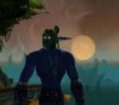

Gardhran
Age : Encore jeune
Sexe : Homme
Race : Elfe
Faction : Alliance
Formation : Druide
Description : Le vieux barde s'installa confortablement sur son siège, puis, jetant un regard circulaire à la salle de la taverne, il toussota, et commença a parler d'une voie emplie de sagesse.
« Beaucoup connaissent Gardhran, l'ancien Prince du Clan Moonblade, et son histoire au sein du clan, depuis son entrée jusqu'a sa triste chute, n'est un mystère pour personne. Cependant, une grande partie de sa vie est inconnue de tous, et c'est celle que je vais tenter de vous raconter aujourd'hui. »
Gardhran est né voici de nombreuses années, au temps ou les elfes jouissaient encore de la paisible existence de ceux qui possèdent la vie éternelle. La guerre entre la Horde et l'Alliance faisait déjà rage, et nombre de braves guerriers des forets étaient déjà tombés en défendant leurs terres. Le Clan Moonblade ne faisait pas exception à la règle, et ses forces ne cessaient de diminuer, ses troupes étant souvent les plus intrépides, obsédés qu'elles étaient par le retour à la recherche de leur lame sacrée. Mais les Moonblade commençaient à douter que cette guerre finisse jamais, et la naissance d'un héritier fut l'espoir qu'ils attendaient depuis longtemps.
Le jeune elfe reçu des sa naissance tout l'amour et l'affection que peut désirer un enfant. Il grandit loin de la fureur des batailles, dans le havre encore paisible du clan, où on entreprit de lui enseigner les rudiments du rôle de chef de clan, la stratégie et l'art du combat comme la rhétorique et la réflexion.
Il s'appliquait à prendre son rôle au sérieux, mais son plus grand plaisir était de se promener dans les paisibles forets d'Ashenvale, profitant de la splendeur du décor. Rien ne lui était plus agréable qu'admirer la beauté de la nature, marchant parmi ses créatures paisibles.
La naissance quelques années après de deux petites surs, Gnii et Luunaa redonna encore espoir au clan, qui continuait a épuiser ses forces dans la guerre qui se poursuivait, chaque jour apportant son lot de mort et de souffrance.
La vie continua à s'écouler paisiblement dans les forets d'Ashenvale, loin de la fureur du combat et de la guerre.
Malheureusement, le destin semblait maudire les membres du clan Moonblade, les condamnant à souffrir plus encore après chaque moment de paix
Le barde s'arrêta quelques instants, puis versa dans sa gorge asséchée un verre du si bon vin que vendait cette auberge. Regardant a nouveau l'assistance pendue à ses lèvres, il reprit le fil de son histoire.
La guerre finit pourtant par arriver jusqu'aux portes d'Ashenvale
Gardhran, ainsi que ses deux petites surs, furent embarqués sur un navire, qui devait les emmener en lieu sur.
Le clan menacé prit la décision d'éloigner les plus jeunes, pour sauvegarder l'avenir du clan, si jamais les envahisseurs venaient à parvenir à leurs fins.
Mais le sort semblait poursuivre le clan, quel que soit le moment
La terre commençait à disparaître à l'horizon quand le premier hurlement de terreur s'éleva.
Une ombre passa sur le navire, et tandis que le corps sans vie de la vigie s'écrasait sur le pont, de terrifiantes créatures s'abattirent avec rage sur les voyageurs. Hasard ou malédiction, les démons avaient choisis de détruire le navire et d'en massacrer tous les occupants, tache a laquelle ils semblaient prendre le plus grand plaisir.
Au milieu de la fureur du combat, Gardhran était perdu dans tant de violence et de haine qu'il ne comprenait pas. Du coin de l'il, il vit ses petites surs, qu'une jeune humaine emmenait dans les profondeurs du navire. Il n'eut cependant pas le temps d'être rassuré. Alors qu'il cherchait un objet qui aurait pu faire office d'arme, il fut percuté de plein fouet par le corps d'un matelot qu'un démon s'était amusé à lancer. Expulsé du pont par l'impact, il plana quelques instants dans le vide avant de s'écraser sur les vagues.
Complètement hébété, il parvint a s'accrocher a un des nombreux morceaux de bois qui flottaient autour du navire. Le choc, la douleur, la peur Le jeune elfe sombra dans l'inconscience, le rire du démon qui menait l'assaut raisonnant sinistrement dans son crâne...
-------------
La première sensation qu'éprouva le jeune prince fut la douleur. Tiré d'un sommeil sans rêves par celle-ci, il avait l'impression que sa tête allait exploser. Portant sa main a celle-ci, il eut la surprise de constater qu'un bandage l'entourait. Ouvrant les yeux avec stupeur, il se rendit compte qu'il n'était pas dans l'autre monde, comme il s'y était attendu, mais sur une couche rembourrée de paille, recouverte de couvertures des plus douces.
Que c'était il donc passé ? Etait il tout compte fait bien passé dans l'au delà ? Quel était donc cet endroit ?
Le premier instant de surprise passé, il observa la pièce dans la quelle il se trouvait. On ne pouvait en fait pas vraiment parler de pièce. Il était dans se qui semblait être une sorte de hutte, un assemblage complexe de longs rondins de bois qui semblaient se rejoindre au sommet de la structure pour former un être. Le tout était recouvert de grandes peaux soigneusement tannées. La lumière filtrait doucement a travers le voile qui protégeait l'unique ouverture, plongeant l'endroit dans une semi obscurité apaisante.
D'étranges assemblages de branches tressées, ornés de plumes et de nombreuses perles constituaient la décoration, donnant une atmosphère encore plus mystérieuse a l'habitation.
Le seul mobilier était la paillasse sur laquelle il reposait , ainsi qu'une petite table basse, juste a coté de celle-ci.
Il contemplait une des mystérieuses décorations quand le voile fut écarté, inondant la pièce d'une lumière aveuglante. Une grande silhouette se découpa dans la lumière et entra dans la pièce.
Quand sa vue s'habitua à la soudaine clarté, Gardhran put distinguer le nouvel arrivant, et retint un hoquet de stupeur.
La créature qui venait d'entrer était la plus incroyable qu'il ai jamais rencontré. Se tenant sur ses deux membres postérieurs a la façon des elfes, elle est était pourtant très différente de ceux-ci. Bien plus grande que la plupart de ceux-ci, elle était aussi beaucoup plus massive. Son corps était entièrement recouvert d'un pelage sombre, la ou on s'attendait a voir des pieds, le jeune elfe vit ce qui semblait être des sabots.
Mais le plus impressionnant était la tête de l'étrange arrivant. Sa tête, bien ancrée dans un coup épais, était entourée de deux énormes cornes, qui jaillissaient de chaque coté de celle-ci. Son nez était ce qui semblait être un imposant museau, au dessus duquel on distinguait deux petit yeux, ou luisait une incroyable intelligence et une sagesse infinie que démentait totalement ce corps comme taillé pour le combat.
En harmonie totale avec le reste de la pièce, l'étrange humanoïde était vêtu d'une toge complexement décorée de symboles mystérieux et colorés, tandis que de multiples bijoux de perles et de bois pendaient a ses poignets et son cou.
Apercevant Gardhran assis sur sa paillasse, le tauren esquissa ce qui semblait être un sourire bienveillant, et posa sur la table basse le plateau qu'il avait apporté, avant de s'asseoir au chevet du jeune elfe.
Le tauren désigna a celui-ci le plateau qu'il avait apporté, sur lequel reposait un grand bol de lait et une coupe remplie de diverses fruits. La faim tenaillait l'estomac du jeune prince elfe, et il fit de son mieux pour ne pas se jeter sur la nourriture, malgré les appels pressant de celui-ci.
Se levant malgré la douleur qui vrillait ses temps, il fit face a ce qui semblait être son soigneur.
- J'ignore l'étendue de l'aide que vous m'avez apporté, dit il, mais je crois que la moindre des choses que je puisse faire pour le moment est de vous remercier, même si je ne suis pas sur que nous nous comprenions. Merci, noble créature, acheva t'il avant de s'incliner devant l'imposant tauren.
Celui-ci sourit a nouveau, comme s'il avait compris le sens de ces paroles. Il dit quelque chose a Gardhran dans une langue que celui-ci n'avait jamais entendu, puis posa une main bienveillante sur l'épaule de l'elfe, avant de lui tendre un des fruits que contenait la coupe.
Cédant enfin a l'appel insistant de son ventre, Gardhran mordit avec plaisir dans le fruit juteux, savourant chaque bouchée comme s'il n'avait pas mangé depuis des jours. Une pensée lui traversa l'esprit : c'était peut être le cas
Ce fut la première rencontre de l'elfe avec le peuple paisible des taurens. Ce ne serait pas la dernière.
Le vieux ménestrel interrompit quelques instants sont discours. Les vieilles rancoeurs étaient toujours présentes, et certains considéraient encore les taurens comme un troupeau de bêtes plutôt que comme le peuple de protecteurs de la Nature qu'ils étaient, mais il fut heureux de constater que, même dans ce village, la confiance commençait à s'installer, et qu'aucune contestation douteuse n'interrompait son recit.
Plus d'infos sur Gardhran >>>Lire les 2 récits de Gardhran >>>